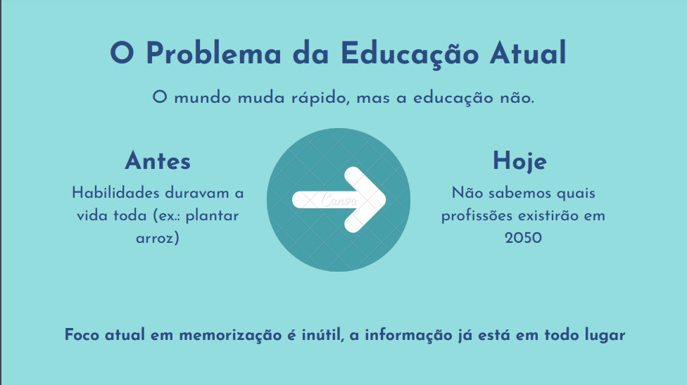

Na disciplina de Filosofia, fui incentivado a refletir criticamente sobre a condição humana, tanto no âmbito pessoal quanto acadêmico e profissional. Aprendi a transformar opiniões em argumentos fundamentados, o que me ajudou a planejar melhor meu percurso formativo e a tomar decisões conscientes durante a minha trajetória.
Durante o semestre, participei de debates e apresentações que exploraram temas como senso comum e os diferentes tipos de conhecimento. Essas atividades me ajudaram a desenvolver habilidades de argumentação e a compreender melhor como construímos e questionamos saberes.
Produzi em grupo um vídeo abordando a relação entre Educação e Inteligência Artificial, no qual entrevistamos um estudante de Engenharia da Computação da UTFPR, explorando os impactos e desafios dessa tecnologia no ensino contemporâneo.
Desenvolvi em grupo um vídeo-entrevista conversando com diversos estudantes da PUCPR para coletar opiniões sobre a relação entre liberdade e tecnologia. Além disso, entrevistamos um profissional da área para comparar as respostas acadêmicas com a visão de quem atua no mercado, enriquecendo o debate com perspectivas práticas e reflexivas.